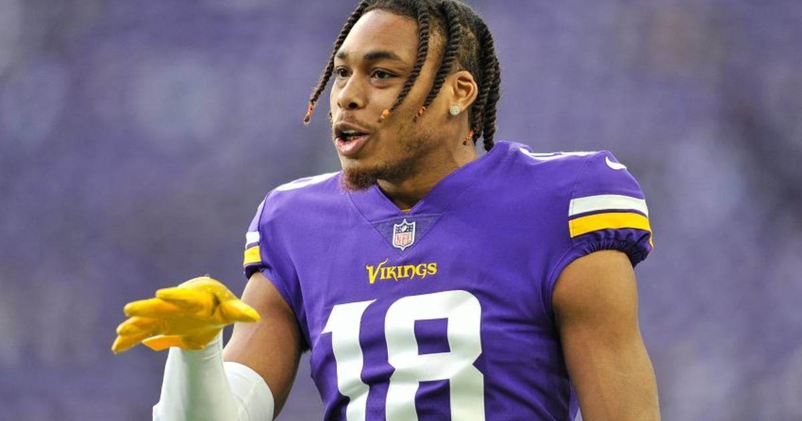

Jefferson's 600th Catch Keeps the Vikings Perfect — the NFL's Last Unbeaten Team
Justin Jefferson caught his 600th career pass in Minnesota's 16-10 win over Indianapolis, becoming one of just seven players since 1993 to reach 600 receptions in his first 99 games — and the Vikings are now the NFL's only unbeaten team at 6-0.

Disclosure: this post contains affiliate links. I earn a commission on qualifying purchases.
Justin Jefferson didn't need a big day to make history — just four catches. The Vikings star caught his 600th career reception in Minnesota's 16-10 win over the Indianapolis Colts on Sunday, reaching the mark in his 99th regular-season game and keeping the Vikings perfect at 6-0.
The milestone
Jefferson entered Sunday with 598 career catches and got there on a quiet afternoon by his standards: 4 catches for 44 yards on 7 targets. The Vikings celebrated it on their official X account mid-game: "Catch #600 in his career for @JJettas2."
The company is select. Jefferson is one of just seven players since 1993 to record 600 receptions in his first 99 games, per Zone Coverage's game recap. He has been doing this since day one — 1,400 yards as a rookie in 2020, then a league-leading 1,809 yards in 2022, when he was named AP Offensive Player of the Year.
The game
It was not pretty, and that is the point of this Vikings team right now. Indianapolis struck first on a long Jonathan Taylor touchdown run and led 10-6 at halftime. Minnesota's defense took it from there: a second-half touchdown drive put the Vikings ahead 13-10, Will Reichard's field goal made it 16-10, and safety Harrison Smith intercepted Daniel Jones in the closing minutes to seal it.
The late touchdown came from Kyler Murray to T.J. Hockenson — the kind of drive this offense has had to grind out all season while the defense carries the record.
The last unbeaten team
Sunday reshaped the top of the league. Kansas City lost its unbeaten start in a 20-3 thumping at Seattle, and San Francisco fell 29-20 at Atlanta. That leaves Minnesota, at 6-0, as the NFL's only remaining unbeaten team — two games clear in the loss column in the NFC North.
The Vikings did it the hard way: trailing at halftime, leaning on defense, and letting their best player make history on a four-catch afternoon.
Gear up: Fanatics